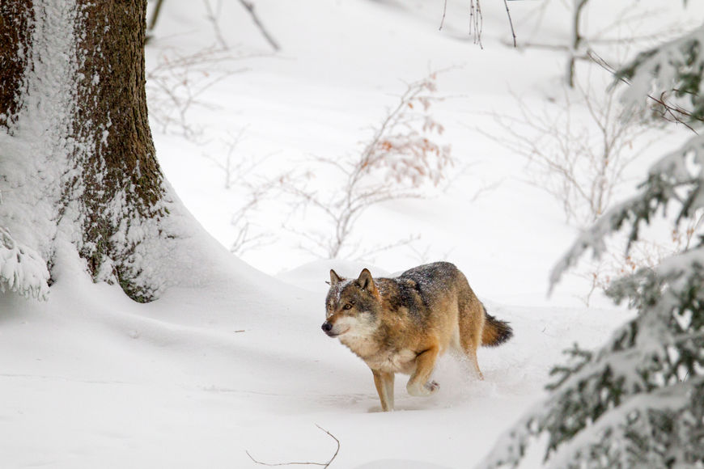

Lobo Vermelho
Estudo sobre animais em extinção
O lobo, nome utilizado para designar a espécie Canis lupus, é um animal que vive em algumas regiões do Hemisfério Norte, sendo encontrado nos Estados Unidos, Europa, Ásia e Canadá. A sua distribuição já foi muito maior do que a atual. Com o declínio de suas populações, esses animais são encontrados em áreas mais restritas e selvagens, onde praticamente não há ação antrópica. Dentre suas principais características, podemos destacar:

Algumas Características
A cor de seus olhos varia entre amarelo, verde até castanho-escuro.
Ao redor dos olhos, podem ser observados anéis claros com uma mancha escura que se estende até a orelha.
O lobo apresenta um corpo com cerca de 105 a 160 cm de comprimento. A sua cauda pode chegar a 50 cm.
Geralmente, o macho é maior que a fêmea.
O macho pesa entre 34 e 49 kg, já as fêmeas, entre 30 e 42 cm.
Apresentam uma longevidade de cerca de 13 anos na natureza.
É um animal carnívoro e grande predador, ocupando o topo da cadeia alimentar.
É um animal que vive em bandos, denominados de alcateias.
Alimentação do lobo
O lobo é um animal carnívoro e apresenta uma alimentação bastante variada, sendo comum se alimentarem de presas grandes, como veados, alces e javalis. No entanto, a sua alimentação também pode ser constituída por presas pequenas, como roedores, e animais domésticos, como ovelhas e gado, além de animais mortos e sobras de alimentos encontrados nos lixos.